AI
6 topics
Anthropic、Google、OpenAIのコーディングエージェントに重大な脆弱性 認証情報窃取などの恐れ
注目ポイント注目度 67点

Gemini本命でも使い分けが正解、ChatGPTとCopilotの得意技
注目ポイント注目度 64点
ChatGPTでコンテンツ制作が完結する――「ChatGPT向けアドビプラグイン」が登場 - ITmedia PC USER
ChatGPTでコンテンツ制作が完結する――「ChatGPT向けアドビプラグイン」が登場
注目ポイント注目度 64点
ChatGPT広告がブラジルで導入、OpenAIがコンバージョンツールとカーセルを追加
注目ポイント注目度 61点
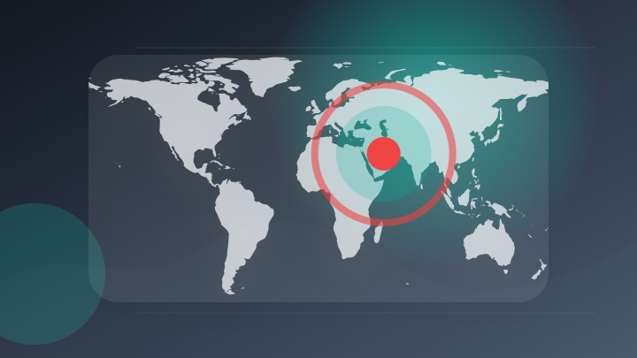
〔潮流底流〕AI投資盛況、業績後押し＝消えぬ中東影響―上場企業4～6月期決算(時事通信)
注目ポイント注目度 61点
「ChatGPT Health」で自分の健康データを守るには？ プライバシー問題とかしこい使い方（ライフハッカー・ジャパン）
「ChatGPT Health」で自分の健康データを守るには？ プライバシー問題とかしこい使い方（ライフハッカー・…
注目ポイント注目度 61点
IT業界
6 topics
サイバー攻撃が相次ぐ中、リーバイス・ストラウスがサイバーセキュリティ侵害を公表
注目ポイント注目度 67点
フロンティアAIでサイバー攻撃が高速化、アクセンチュアが警鐘「防御中心からの脱却を」
注目ポイント注目度 67点
売れるネット広告社グループ（9235）、サイバーセキュリティの新サービス『セキュリティハッキング診断』を提供開始！～AI時代の新リスクに、攻撃者視点の実践的な脆弱性診断で応答～
売れるネット広告社グループ（9235）、サイバーセキュリティの新サービス『セキュリティハッキング診断』を提供開始！…
注目ポイント注目度 67点
テクノルとOVERE、Microsoft 365セキュリティ運用の高度化に向け協業
注目ポイント注目度 64点
著名人なりすまし詐欺広告拡散 Google、Metaなど大手IT企業5社に対策要請 デジタル庁など
注目ポイント注目度 64点
Mrs. GREEN APPLE 大森元貴、CM出演で美声披露 「ミセスでよかった」（日テレNEWS NNN）
注目ポイント注目度 61点
政治
6 topics
イラン国会、米国やイスラエルのホルムズ海峡通航禁止法案を検討
注目ポイント独立2媒体｜注目度 95点
AI産業が揺さぶる米選挙－規制巡る攻防に巨額資金、データセンターや雇用も争点
注目ポイント注目度 70点
外国人受け入れ規制巡り、政府がWG初会合 「責任持って議論」
注目ポイント注目度 70点
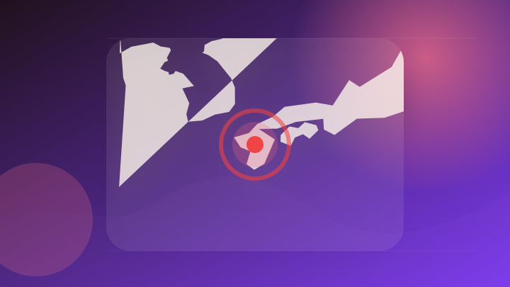
政府、熊本地震を激甚災害に指定 特定非常災害にも
注目ポイント注目度 70点
米国政府出版局（GPO）、連邦政府機関等の年次報告書を作成機関ごとに提供する“Annual Reports collection”を公開
米国政府出版局（GPO）、連邦政府機関等の年次報告書を作成機関ごとに提供する“Annual Reports col…
注目ポイント注目度 65点
画像・写真：会談に臨むベネズエラ国会議長ら：時事ドットコム
注目ポイント注目度 64点
社会
6 topics
生徒が銃乱射、教員ら５人死亡 祖父母も殺害、犯行後自殺―タイ
注目ポイント注目度 70点
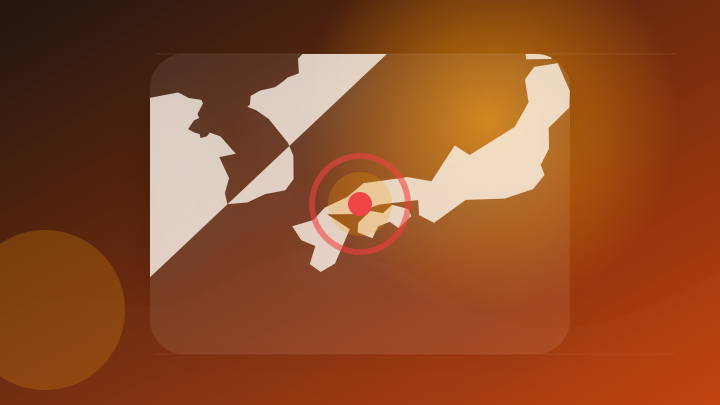
元従業員の男、殺人容疑は不起訴 住宅出火、会社役員が死亡した事件 [広島県]
注目ポイント注目度 70点
違法薬物の密売拠点摘発 男逮捕、９種８キロ押収―近畿麻薬取締部
注目ポイント注目度 70点
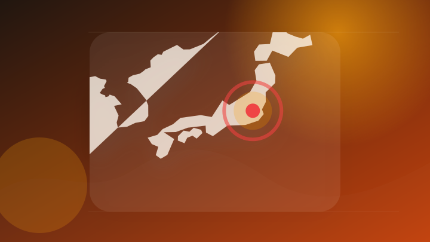
毎日新聞記者を釈放 包丁で夫脅した疑いで逮捕
注目ポイント注目度 70点
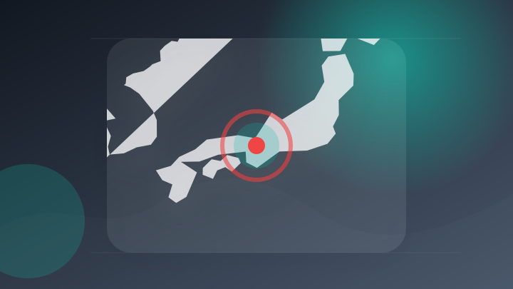
「スカウト」疑いで逮捕の大学生増加 警察「安易に手を出さないで」 [東京都]
注目ポイント注目度 70点
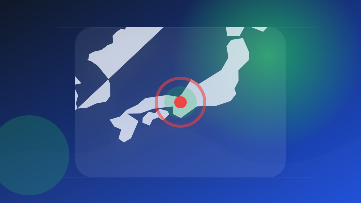
京大病院で医療事故 脳腫瘍の手術で正常部位摘出、自発呼吸不能に [京都府]
注目ポイント独立3媒体｜注目度 68点
事件・事故
6 topics
福岡・大野城市で建物近くで男性が死亡、エアコン設置中か
注目ポイント注目度 70点
路上で女子児童の体を触る 不同意わいせつ容疑で27歳男を逮捕 小学校からの相談で発覚
注目ポイント注目度 67点
少女を誘拐、不同意わいせつ疑いで福岡県20歳男を逮捕 「不同意といわれるのは納得できない」 白石署
注目ポイント注目度 67点
顔見知りでない女性2人の自転車をパンクさせたか…無職の31歳女を逮捕 防犯カメラの捜査から浮上 容疑認める 静岡市
注目ポイント注目度 67点
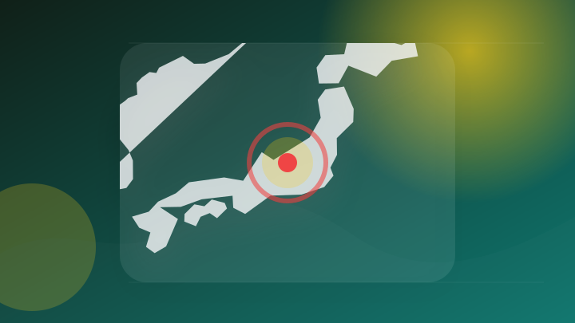
トラック2台絡む事故 長野県の男性死亡 群馬･下仁田町の上信越道
注目ポイント注目度 67点
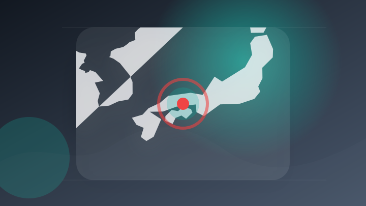
倉敷市真備町箭田で男性刺され死亡 殺人容疑でおいに逮捕状 詳しい経緯調べる 岡山県警
注目ポイント注目度 67点
芸能人の結婚・離婚・交際
1 topics
災害
6 topics

令和８年熊本地震非常災害対策本部会議
注目ポイント注目度 100点
【 台風情報 】大型の台風15号(チャンホン) 11日(火・祝)頃にも本州に接近の可能性 今後の進路は？【今後の進路予想と雨風シミュレーション・7日午後10時10分 気象庁発表】
【 台風情報 】大型の台風15号(チャンホン) 11日(火・祝)頃にも本州に接近の可能性 今後の進路は？【今後の進…
注目ポイント独立2媒体｜注目度 95点
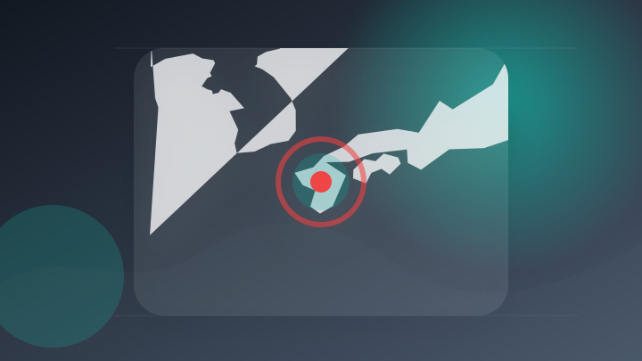
「皆さんの手を待ってます」災害ボランティア本格化…課題も 熊本地震発生から10日
注目ポイント注目度 70点

大型で非常に強い台風13号｢ドルフィン｣ 沖縄付近で速度が落ち… 熊本など九州にも影響のおそれ 今後の進路 雨シミュレーション【台風情報】
大型で非常に強い台風13号｢ドルフィン｣ 沖縄付近で速度が落ち… 熊本など九州にも影響のおそれ 今後の進路 雨シミ…
注目ポイント注目度 70点
【緊迫】手術中に地震 激しい揺れの中で医師らが必死に患者を守る すぐ再開できるよう動くスタッフも
注目ポイント注目度 70点
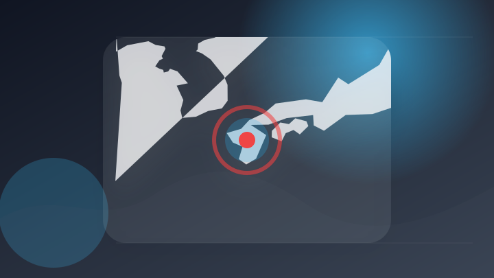
復興のため「泥酔やめて」熊本県警がXで呼びかけ 災害の対応に影響 [熊本県] [2026年熊本地震]
注目ポイント注目度 70点
経済
6 topics
決算調査で判明、企業を襲うサイバー詐欺とサイバー攻撃
注目ポイント注目度 70点
きょう決算発表ピーク 上場企業6割以上が増益
注目ポイント注目度 64点
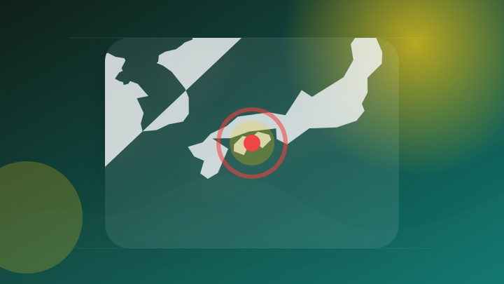
高知銀行 2026年度第1四半期は赤字決算 「全東信」の破綻影響【高知】 （2026年8月7日掲載）｜RKC NEWS NNN
高知銀行 2026年度第1四半期は赤字決算 「全東信」の破綻影響【高知】 （2026年8月7日掲載）
注目ポイント注目度 64点
決算プラス・インパクト銘柄 【東証プライム】寄付 … 任天堂、バンナムＨＤ、東レ (8月6日発表分)
注目ポイント注目度 61点
増収増益 じもとHD＜四半期決算東北（8月7日）＞
注目ポイント注目度 61点
米国市場は企業決算で明暗、人工知能投資と地政学リスクに警戒強まる
注目ポイント注目度 61点
国際
6 topics
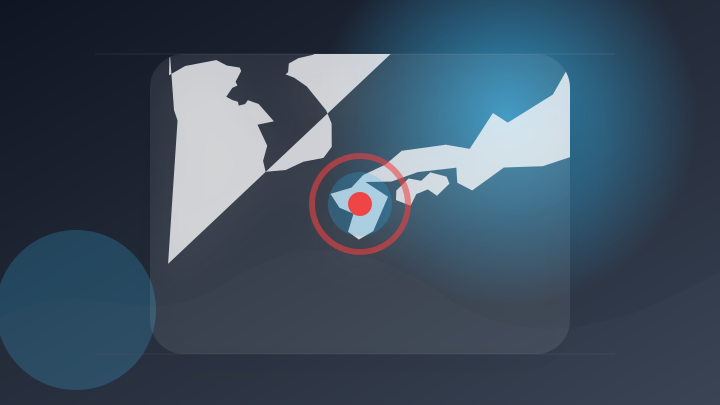
外交部の林佳龍部長、熊本地震の被災地支援として義援金500万元の目録を日本側へ
注目ポイント地震・AI｜注目度 67点
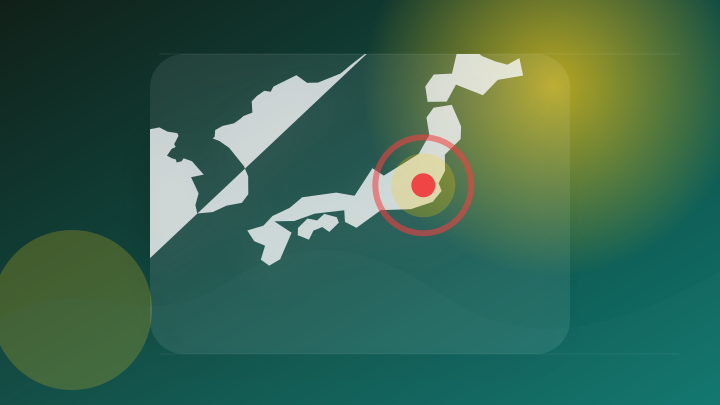
猛暑増加、背景に地球温暖化 脱炭素企業団体、都内でイベント
注目ポイント注目度 64点
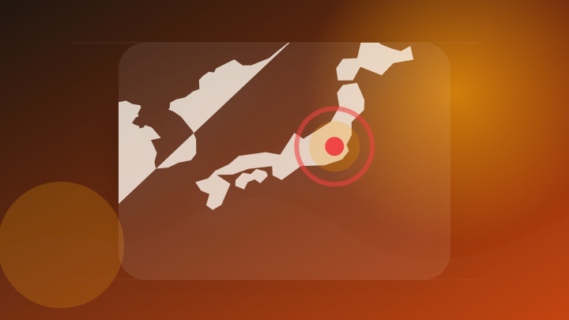
「うちの猫が爪切りを嫌がらなくなった！」海外で1.9万個売れた関の刃物職人が作る「少ない力で静かに切れる」猫用爪切り、国内発売開始。
「うちの猫が爪切りを嫌がらなくなった！」海外で1.9万個売れた関の刃物職人が作る「少ない力で静かに切れる」猫用爪切…
注目ポイント注目度 64点
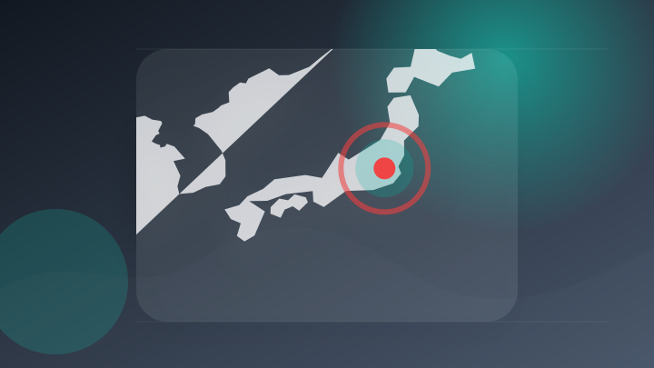
外国人受け入れ在り方、議論開始 政府有識者会議
注目ポイント注目度 64点
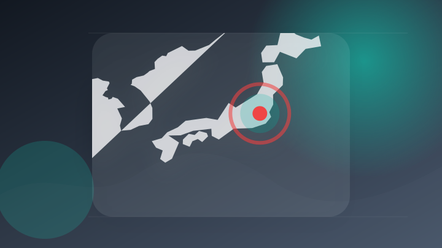
「Deep Tech Expansion Program 2026」参加企業等の募集を開始します！
注目ポイント注目度 64点
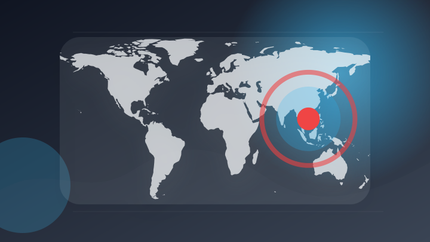
タイ首相のベトナム訪問 経済外交が主要テーマに
注目ポイント注目度 61点
金融
3 topics
エンタメ
3 topics
W TOKYO、新規事業としてエンタメ業界特化型キャリア支援サービス「TGC CAREER」を本日より提供開始
注目ポイント独立2媒体｜注目度 66点
【ゲームエンタメ株概況(8/7)】1Q決算の大幅増益が評価された任天堂が続伸 1Q好決算と2Q累計業績予想の上方修正を発表のバンダイナムコHDは5000円台を回復(gamebiz)
【ゲームエンタメ株概況(8/7)】1Q決算の大幅増益が評価された任天堂が続伸 1Q好決算と2Q累計業績予想の上方修…
注目ポイント注目度 61点
映画『平行と垂直』とタイアップ！
注目ポイント注目度 60点
ゲーム
5 topics
プレイヤー同士で即席FPS作るパーティーゲーム『Bit by Bit』発表―武器にマップや効果音、みんなで一緒にクリエイト
プレイヤー同士で即席FPS作るパーティーゲーム『Bit by Bit』発表―武器にマップや効果音、みんなで一緒にク…
注目ポイント注目度 61点
『鳴潮』アップデートVer.3.6「幻雲纏いし灯の影、俗世憂いし剣の心」、8月20日より配信開始！
注目ポイント注目度 61点
"任天堂関連"で知られるホシデン、第1四半期決算は営業利益85％増の44億円 前年発生した円高の影響がなかったため
注目ポイント注目度 61点
任天堂が続伸、４－６月期大幅増益を好感(ウエルスアドバイザー)
注目ポイント独立2媒体｜注目度 61点
アクションゲーム『バブルボブル シュガーダンジョン ブースト』Switchダウンロード版の予約が開始！
注目ポイント注目度 61点